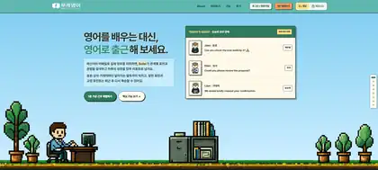

“직장 영어를 공부하는 대신,
영어로 일하는 하루를 연습할 수는 없을까?”

GAME MODEBUSINESS MODE
WORKMATE ENGLISH / INTRO MODESAUTO ROLLING ↔
같은 ‘출근’도 두 가지 감각으로 시작됩니다.
픽셀 오피스의 게임 모드와 더 정제된 업무 UI의 비즈니스 모드를 실제 인트로 화면 그대로 번갈아 보여줍니다.
GAME몰입감 있는 가상 오피스와 캐릭터 중심 경험
BUSINESS실제 업무 도구에 가까운 차분하고 실용적인 경험
THE GAP
영어를 배우는 순간과 쓰는 순간이 달랐습니다.
동료, 팀장, 거래처에 따라 말투와 맥락이 달라지는 실제 업무 상황에 가까운 연습이 필요하다고 봤습니다.
THE WHY
왜 ‘학습 앱’처럼 보여야 할까?
“더 많이 공부하게 할까?”보다 “영어를 쓰는 업무 환경을 어떻게 반복 경험하게 할까?”를 먼저 물었습니다.
THE FORM
가상의 근무일을 제품 구조로 만들었습니다.
출근, 관계별 메시지, 영어 답변, AI 후속 대화, 퇴근 리포트까지 하나의 업무 흐름으로 구현했습니다.
“영어 공부”가 아니라 “영어로 일하기”를 연습하도록 설계했습니다.
ReactTypeScriptSupabaseLLM